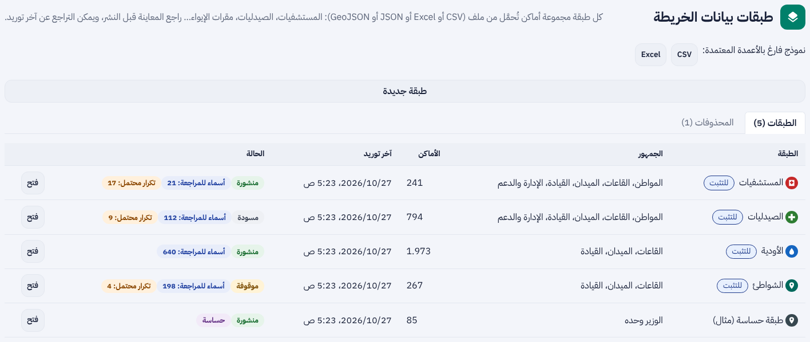
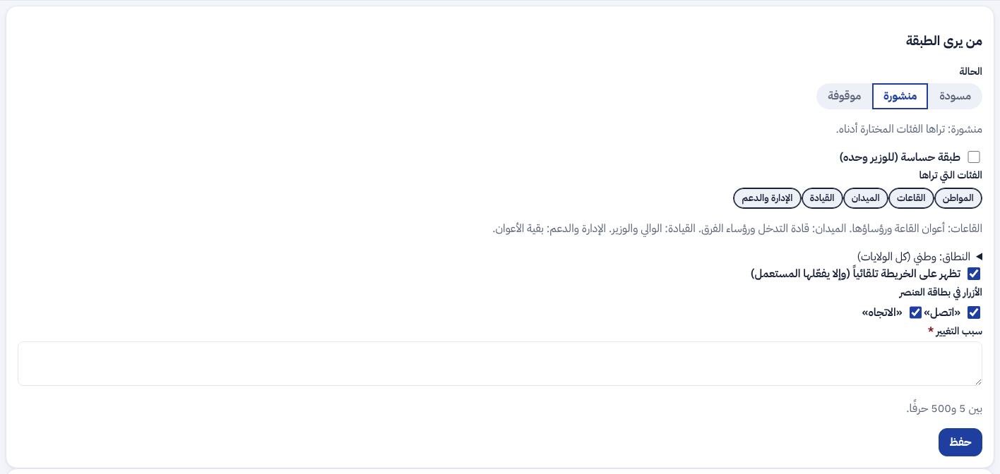
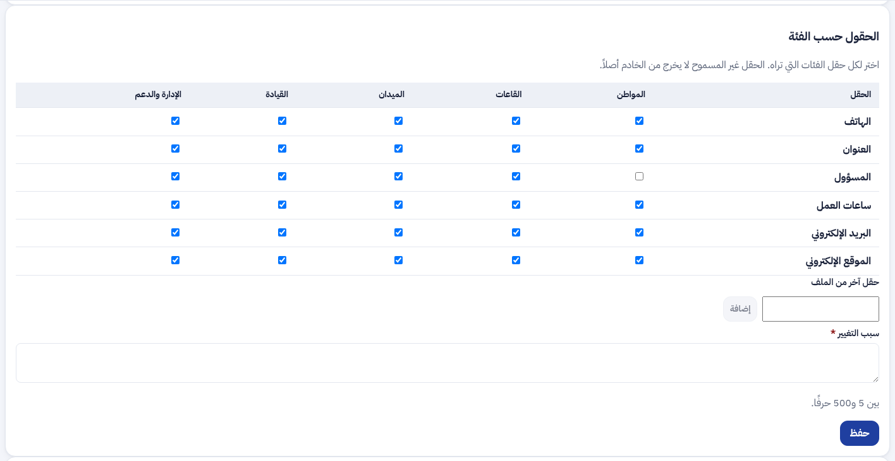
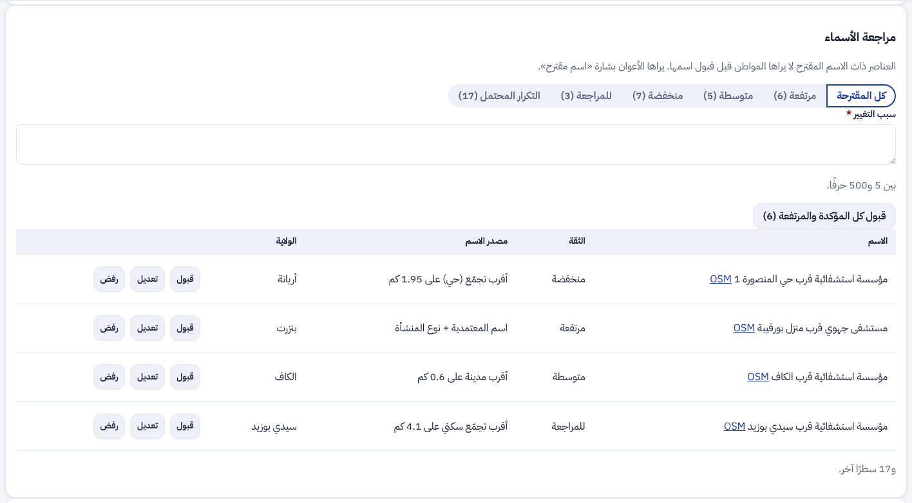
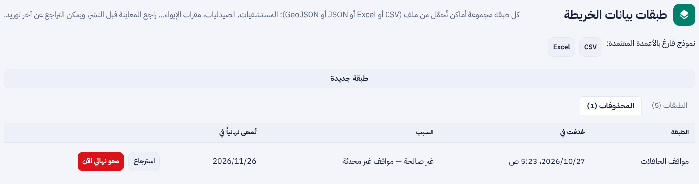
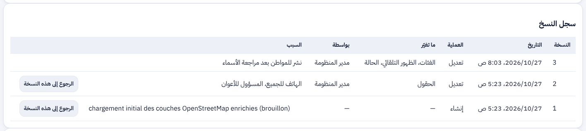

ء-حماية e-Himaya
تقرير المرحلة L1a: إدارة طبقات الخريطة (البند 10): من يرى الطبقة وما يراه منها، الطبقة الحساسة للوزير وحده، تعديل الطبقة وحذفها واسترجاعها، مراجعة أسماء OSM؛ والبند 1: القبول الرسمي وسجل القرارات الخارجية
1. أين تقع هذه المرحلة من مسار المشروع
التبليغ
←
المعالجة
←
التحليل
←
مؤشرات الأداء KPI
←
التنبؤ بالذكاء الاصطناعي
←
اتخاذ القرار
- المعالجة: الطبقات (المستشفيات، الشواطئ، الغابات، …) هي ما تعتمد عليه القاعة والميدان لاختيار أقرب مستشفى أو فهم محيط الحادثة؛ صارت تُدار بحالة ومراجعة قبل أن تصل أحدا.
- اتخاذ القرار: كل طبقة تُعرض لمن يحتاجها فقط، والطبقة الحساسة للوزير وحده، وكل اطلاع عليها مسجّل.
- هذه أول مراحل «الخريطة والقرار» (L1a إلى L5) بالترتيب الذي اعتمده يامن في 27 أكتوبر.
2. مراجعة ← تصميم ← تطوير
الطلب: «نعم 1 و6 و8 و9 ثم واصل بنفس الترتيب المنهجي 10 و4 و12 و13 … ولا تنسى … إمكانية تعديل الطبقات أو حذف طبقة». التصميم في
design-layers.md.
قرار أمني (يامن): طبقتا الثكنات والنفط والغاز ليستا في المستودع، ولا يحمّلهما أمر OSM ولو وُجدتا بجانب الملفات؛ يرفعهما المدير من اللوحة ويوسمهما «حساسة».
- حالة الطبقة: مسودة (يراها المدير وحده)، منشورة، موقوفة. كل طبقة جديدة تبدأ مسودة. الطبقات الموجودة بقيت منشورة بجمهورها السابق.
- من يراها: خمس فئات بالأزرار (المواطن، القاعات، الميدان، القيادة، الإدارة والدعم) ونطاق وطني أو ولايات بعينها، والظهور التلقائي، وزرّا «اتصل» و«الاتجاه». الخادم يجيب 404 لمن لا يرى الطبقة.
- الحساسة: للوزير (لجنة مركزية بنطاق وطني) ولمدير المنظومة فقط؛ الوالي لا يراها ولو أثناء محور مفتوح؛ كل قراءة لعناصرها في سجل التدقيق.
- الحقول حسب الفئة: مصفوفة خانات؛ الحقل غير المسموح لا يخرج من الخادم أصلا.
- التعديل والحذف (طلب يامن): كل تعديل بسبب ورقم نسخة يمنع الكتابة فوق تعديل آخر، وسجل نسخ للرجوع إلى أي نسخة. حذف الطبقة أو المكان بسبب من رقائق، يبقى في «المحذوفات» 30 يوما قابلا للاسترجاع كما كان، ثم تمحوه مهمة الاحتفاظ؛ والمحو قبل الأجل بتأكيد ثانٍ.
- جودة OSM: حالة الاسم ودرجة الثقة ومصدرها ورابط OSM وتاريخ اللقطة، والتكرار المحتمل في 50 م. «مراجعة الأسماء»: قبول، تعديل، رفض، «قبول المؤكدة والمرتفعة» دفعة واحدة، ودمج المكرر أو إبقاؤه. المواطن لا يرى الاسم المقترح قبل قبوله.
- الصيغ: GeoJSON بالخطوط والمساحات، KML و KMZ، Shapefile مضغوط، GeoPackage، إضافة إلى CSV و XLSX و JSON. الإسقاط غير WGS84 يُرفض بسببه.
- تحميل OSM: أمر
load-osm يحمّل الطبقات الـ31 من data/osm مسوداتٍ بإعدادات مقترحة، باستيراد عادي يمكن التراجع عنه.
- البند 1: عمود «القبول الرسمي» في جدول المراحل بالملف الوصفي، منفصل عن نسبة التطوير، وسجل القرارات الخارجية (الجهة، الوثيقة المطلوبة، الوظائف المعطّلة) مع OPS-01 (التوفر وزمن الاستعادة) و AI-01 (عتبات كاشف الحرائق والدخان تعتمدها لجنة).
3. لقطات
صفحة الطبقات في لوحة القيادة بالعربية: القائمة بشاراتها، ثم من يرى الطبقة، والحقول حسب الفئة:



مراجعة الأسماء المقترحة، والمحذوفات القابلة للاسترجاع، وسجل النسخ:



4. التقدم لكل جزء
| البند | الحالة | التقدم |
|---|
| F-DSH-46 حالة الطبقة ومن يراها | منجز (L1a) |
|
| F-DSH-47 الطبقة الحساسة للوزير وحده | منجز (L1a) |
|
| F-DSH-48 الحقول حسب الفئة | منجز (L1a) |
|
| F-DSH-49 تعديل الطبقة وحذفها واسترجاعها | منجز (L1a) |
|
| F-DSH-50 جودة طبقات OSM ومراجعة الأسماء | منجز (L1a) |
|
| الصيغ KML و Shapefile و GeoPackage والخطوط والمساحات | منجز (L1a) |
|
| البند 1: القبول الرسمي وسجل القرارات | منجز (الملف الوصفي V16) |
|
| F-DSH-51 الخريطة التفاعلية والسلامة الساحلية | المرحلة L1b |
|
تقدم L1a: 100%. مراحل الخريطة والقرار (L1a إلى L5): المرحلة الأولى من ست.
5. المحاكاة [SIM]
- [SIM] اللقطات مأخوذة بواجهة برمجية محاكاة بأماكن تجريبية؛ الطبقة الحساسة فيها «طبقة حساسة (مثال)» وليست الطبقات الحقيقية.
- [SIM] طبقات
data/sim-layers تبقى معلَّمة «بيانات تقريبية» ومنشورة للتجربة. طبقات OSM حقيقية لكنها تُحمَّل مسودات حتى يراجعها المدير.
6. الاختبارات المطبقة
| المكوّن | العدد | النتيجة |
|---|
| الخلفية (pytest) | 904، منها 16 مسارا جديدا في test_layers_manage.py | كلها ناجحة |
| لوحة القيادة (vitest) | 476، منها 4 جديدة في LayersPage.test.tsx | كلها ناجحة |
| تطبيق الهاتف (flutter test) | 570 (دون تغيير) | كلها ناجحة |
ruff و mypy و eslint و tsc | — | لا ملاحظة |
- كل صيغة تُستورد (KML و KMZ و Shapefile و GeoPackage مبنية داخل الاختبار)، الخطوط والمساحات، الإسقاط المرفوض، العنصر الكبير جدا.
- المسودة لا يراها إلا المدير، الفئات والنطاق الجهوي (404)، الحقل المحجوب لا يصل، الحساسة للوزير وحده مع سجل الاطلاع والوالي لا يراها.
- حذف الطبقة واسترجاعها ومحوها، والمحو الآلي بعد 30 يوما، وحذف المكان واسترجاعه، والرجوع إلى نسخة.
- الاسم المقترح لا يصل المواطن، القبول والتعديل والرفض والدفعة، الدمج؛ واستيراد ملف المستشفيات الحقيقي من
data/osm.
8. المخرجات المحيَّنة
- الملف الوصفي V16 (docx و pdf) في
spec/: F-DSH-46 إلى 50 منجزة، F-DSH-51 للمرحلة L1b، 373 مسارا و445 عملية، الاختبارات، سجل القرارات الخارجية (§12.2)، وعمود القبول الرسمي ومراحل L في خارطة الطريق.
- مخططات UML في
diagrams/: مخطط تسلسل جديد «إدارة الطبقات» (51)، وصنف الطبقة والمكان بحقولهما الجديدة وصنف «نسخة الطبقة» (RévisionCouche).
- العرض للمسؤولين في
presentation/: 31 مرحلة، الاختبارات، وخارطة طريق بخمس خطوات منها «الخريطة والقرار».
- مرجع التصميم مُعاد توليده دون تغيير (لا لون ولا أيقونة جديدة): design-reference.html.
- سجل الإصدارات، القائمة المؤجلة (G1 و G2 أُنجزا، و§3 مراحل L)، ودليل التنصيب (§9: تحميل OSM ومدة حفظ المحذوفات).
9. ملاحظات وانحرافات
- لا نوع هندسي ثابت للطبقة: ملفات OSM تجمع النقاط والمساحات في طبقة واحدة، فقُبلت كما هي ويظهر نوع كل مكان.
- لا GDAL في الخادم: الإسقاطات التونسية (Carthage / Lambert) تُحوَّل مرة واحدة قبل الرفع، ويُراجع القرار إن احتاجه الديوان دوريا.
- النطاق الجهوي يخص الطبقة كلها: العون الجهوي يرى الطبقة إن كانت ولايته في نطاقها.
- طبقة مراكز الحماية المدنية المبنية من الوحدات لا تُحذف.
- القبول الرسمي «لم يُقبل بعد» لكل المراحل إلى أن يقبلها الديوان كتابيا.
10. ما يلي
المرحلة L1b: الخريطة التفاعلية بالطبقات المنشورة في التطبيق واللوحة، «الأقرب إليّ» على الطريق، والسلامة الساحلية ومؤشر خطر الغرق اليومي (البند 4). ثم L2 (البندان 12 و8)، L3، L4، وL5 بمعطيات [SIM] وتقرير.